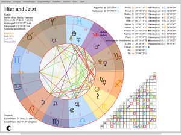
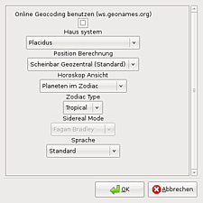

OpenAstro.org
Dieser Artikel wurde für die folgenden Ubuntu-Versionen getestet:
Ubuntu 16.04 Xenial Xerus
Ubuntu 14.04 Trusty Tahr
Zum Verständnis dieses Artikels sind folgende Seiten hilfreich:
Astrologieprogramme, die bei der Erstellung von Horoskopen helfen, haben es traditionell schwer unter Linux. Zwar können entsprechende Programme für Windows entweder virtualisiert oder mit Wine ausgeführt sowie Horoskope über Internetseiten erstellt werden, aber aktuelle, native Programme für Linux mit grafischer Oberfläche fehlten bisher.
Diese Lücke möchte das Projekt OpenAstro.org  schließen. Das Programm selbst basiert auf Python 2.7 und verwendet die Bibliothek Swiss Ephemeris (swisseph) von AstroDienst zur Berechnung der Planetenstellungen.
schließen. Das Programm selbst basiert auf Python 2.7 und verwendet die Bibliothek Swiss Ephemeris (swisseph) von AstroDienst zur Berechnung der Planetenstellungen.
Das Programm berechnet Horoskope und erstellt Horoskop-Grafiken, aber keine Auswertung bzw. Deutung.
Funktionen]:
|  |
| Tageshoroskop |
Ephemeriden von 1800 n.Chr. - 2399 n.Chr. (erweiterbar)
verschiedene Diagrammtypen: Natal/Radix, Transit, Synastrie, Combine, Composite
als JPG, PNG, SVG und OAC (internes Format) speicherbar
Solarhoroskop / Sekundärdirektion
Benutzerdefinierte Auswahl von Planeten und Aspekten
Berücksichtigung
weiterer Himmelskörper wie Chiron, Pholus, Ceres, Pallas, Juno, Vesta
Sensitiver Punkte wie nördlicher und südlicher Mondknoten, Tag- und Nachtpunkt
Häuserspitzen-Aspekte
monatlicher Zeitstrahl aller Aspekte
Ortsauswahl:
Offline-Atlas mit ca. 80.000 Städten
Online-Atlas auf Basis von GeoNames
Datenbank-Import von den Programmen: Skylendar (.skif), Oroboros (.xml), Astrolog (.dat), Zet8 Dbase (.zbs)
Installation¶
 Das Programm ist nicht in den offiziellen Paketquellen vorhanden.
Das Programm ist nicht in den offiziellen Paketquellen vorhanden.
Fremdquellen¶
Die jeweils aktuellste Programmversion ist im "Personal Package Archiv" (PPA) [1] des Entwicklers zu finden.
Adresszeile zum Hinzufügen des PPAs:
ppa:pellesimon/ppa
Hinweis!
Zusätzliche Fremdquellen können das System gefährden.
Ein PPA unterstützt nicht zwangsläufig alle Ubuntu-Versionen. Weitere Informationen sind der  PPA-Beschreibung des Eigentümers/Teams pellesimon zu entnehmen.
PPA-Beschreibung des Eigentümers/Teams pellesimon zu entnehmen.
Damit Pakete aus dem PPA genutzt werden können, müssen die Paketquellen neu eingelesen werden.
Nach dem Aktualisieren der Paketquellen kann folgendes Paket installiert [2] werden:
openastro.org (ppa)
 mit apturl
mit apturl
Paketliste zum Kopieren:
sudo apt-get install openastro.org
sudo aptitude install openastro.org
Anschließend findet sich bei Ubuntu-Varianten mit einem Anwendungs-Menü ein Programmstarter unter "Grafik -> Open Source Astrology" [4].
Fremdpakete¶
Alternativ kann man auch Fremdpakete  manuell herunterladen und installieren [3]. Dabei ist die Installationsreihenfolge der Pakete wichtig:
manuell herunterladen und installieren [3]. Dabei ist die Installationsreihenfolge der Pakete wichtig:
pyswisseph
openastro.org-data
openastro.org
Hinweis!
Fremdpakete können das System gefährden.
Einstellungen¶

Beim ersten Start des Programms wird man aufgefordert, den eigenen Standort einzugeben. Dann wird zunächst das Horoskop für den aktuellen Zeitpunkt und Ort berechnet. Später dient diese Ortsangabe zur Berechnung der Häuserspitzen im Transit-Diagramm. Der Ort lässt sich nachträglich unter "Einstellungen -> Standort einstellen" ändern.
Außerdem findet man unter "Einstellungen" diverse Optionen, die Darstellung des Diagramms anzupassen. Einige für die Berechnung des Horoskops wesentliche Parameter befinden sich im Untermenü "Einstellungen -> Einstellungen":
Aktivierung des Online-Atlas
14 verschiedene Häusersysteme
tropischer oder siderischer Tierkreis
geozentrische, topozentrische oder heliozentrische Berechnung der Planetenstände
(Die Standardeinstellungen sind im Bild zu sehen.)
Ephemeriden erweitern¶
Um die Ephemeriden zu erweitern, müssen die entsprechenden Dateien heruntergeladen und in den Ordner ~/.openastro.org/swiss_ephemeris/ kopiert werden. Prinzipiell lässt sich damit der Zeitraum auf den Bereich von 5400 v.Chr. bis 5400 n.Chr. erweitern.
Folgendes Beispiel zeigt beispielhaft den Vorgang für den Zeitraum von 1200 n.Chr. - 1799 n.Chr. [5]:
cd ~/.openastro.org/swiss_ephemeris/ wget ftp://ftp.astro.com/pub/swisseph/ephe/sepl_12.se1 wget ftp://ftp.astro.com/pub/swisseph/ephe/semo_12.se1 wget ftp://ftp.astro.com/pub/swisseph/ephe/seas_12.se1
Alternativ können die Einzeldateien sepl_*.se1 (Hauptplaneten), semo_*.se1 (Mond) und seas_*.se1 (weitere Himmelskörper wie Ceres, Pallas, Vesta, Juno, Chiron and Pholus) auch als gebündelte Archivdateien sweph_*.tar.gz (jeweils ca. 2 MB) heruntergeladen und entpackt [6] werden. Weitere Informationen zur Systematik (Benennung) der Ephemeriden-Dateien.
Bedienung¶
Um ein neues Horoskop zu erstellen, wählt man "Diagramm -> neues Diagramm". Folgende Daten werden zur Erstellung eines Horoskops zwingend benötigt:
Geburtstag und möglichst exakte Geburtszeit
Geburtsort
Die Geburtszeit ist als lokale Zeit anzugeben. Die Berücksichtigung von Sommer- bzw. Winterzeit und Zeitzone erfolgt automatisch. Man erhält eine Horoskop-Grafik für die jeweilige Person oder ein Ereignis, die sich ausdrucken oder mit "Diagramm -> Speichern als" als Bild speichern lässt. Die Horoskop-Daten können als eigener Datensatz (.oac) gespeichert und zusätzlich in eine interne Datenbank aufgenommen werden.
Tipps¶
Kalenderdaten¶
Um das Sternzeichen zu einem Geburtstag zu berechnen, braucht man nicht unbedingt ein Astrologieprogramm. Das NumericalChameleon beantwortet auch diese Frage und kann nebenbei auch noch andere interessante Dinge lösen, z.B. an welchem Wochentag jemand geboren ist.
Links¶
OpenAstro.org
auf Launchpadopenastro does not start on precise
- Fehler und Problemlösung für Ubuntu 12.04
Astrodienst
 - umfangreiche Hintergrundinformationen zum Thema
- umfangreiche Hintergrundinformationen zum ThemaLogiciels d'astrologie pour Linux
 - aktuelle und vollständige Programmübersicht
- aktuelle und vollständige ProgrammübersichtAstrology
- Programmübersicht (nativ oder via Wine ausführbare Windows-Programme)What Watch
- Astrologieprogramm für Windows (Open Source)
- Erstellt mit Inyoka
-
 2004 – 2017 ubuntuusers.de • Einige Rechte vorbehalten
2004 – 2017 ubuntuusers.de • Einige Rechte vorbehalten
Lizenz • Kontakt • Datenschutz • Impressum • Serverstatus -
Serverhousing gespendet von